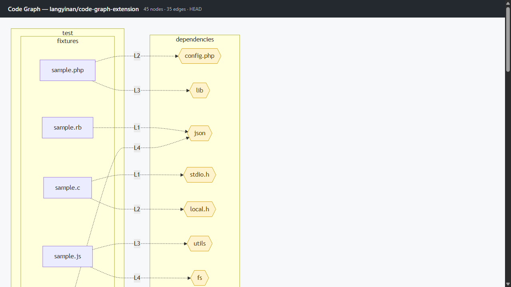

What it does
- Dependency graphsWhich files import which, plus external package dependencies.
- Call graphsFunction-to-function call edges within each file.
- Symbol mapsPer-file functions and variables with usage edges.
- Adjustable detailCollapse to folders or expand to every file and symbol.
- ClickableJump to a file — or the exact source line — on GitHub.
- 10+ languagesJS/TS, Python, Go, Rust, Java, C#, C/C++, Ruby, PHP.
How it works
Click the Code Graph button added to any GitHub repo page. The extension reads the repository's source via the GitHub API, parses imports, calls, and symbols, and renders an interactive, zoomable Mermaid diagram in a docked side panel.